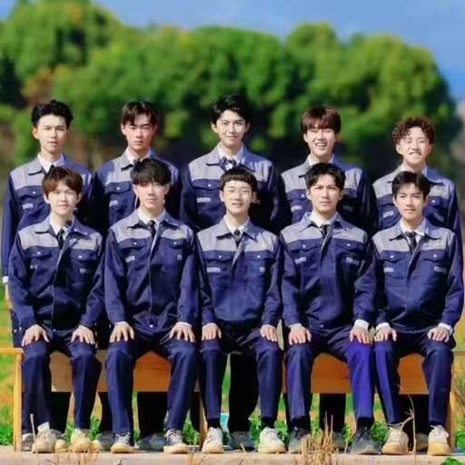

十个勤天：种地吧里的热血少年们
十个勤天，出自综艺《种地吧》。
成员：蒋敦豪、鹭卓、李耕耘、李昊、赵一博、卓沅、赵小童、何浩楠、陈少熙、王一珩。

十个少年，一百九十天种地生活，插秧、收割、养地、经营农场，脚踏实地，真诚热烈。

少年不惧岁月长，彼方尚有荣光在，十个勤天，永远并肩同行。

← 返回主页
十个勤天，出自综艺《种地吧》。
成员：蒋敦豪、鹭卓、李耕耘、李昊、赵一博、卓沅、赵小童、何浩楠、陈少熙、王一珩。

十个少年，一百九十天种地生活，插秧、收割、养地、经营农场，脚踏实地，真诚热烈。
少年不惧岁月长，彼方尚有荣光在，十个勤天，永远并肩同行。